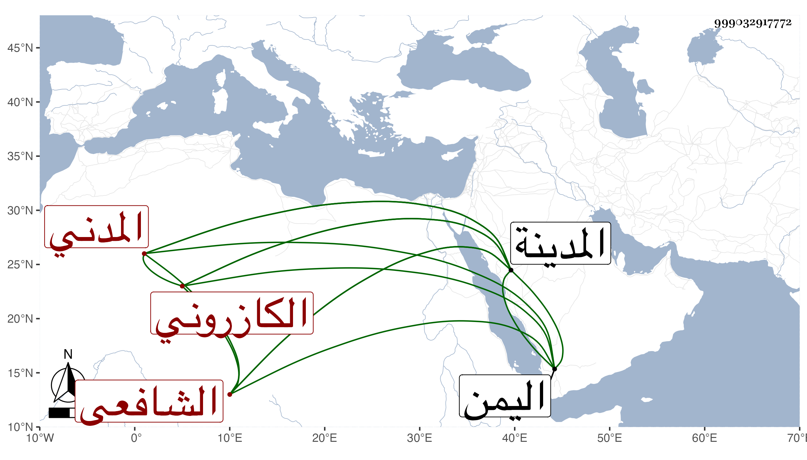

0902Sakhawi.DawLamic.ITO20230111-ara1.EIS1600.999032917772
Biography ID: 999032917772
113
عبد الله بن عبد الوهاب بن أبي البركات بن أبي الهدى بن محمد بن تقي بن محمد بن روزبة عفيف الدين وجمال الدين أبو محمد بن التاج الكازروني المدني الشافعي سبط أبي الفتح بن محمد بن إبراهيم بن علبك الآتي . ولد في رجب سنة اثنتين وستين وثمانمائة بالمدينة النبوية ونشأ بها فحفظ المنهاج وارتحل إلى اليمن فعرضه وأخذ عن فقيهه عمر الفتى في المنهاج والإرشاد وغيرهما وسمع على إسماعيل بن محمد بن مبارز أربعي النووي وغيرها وقرأ على ولده الطيب في منسك المراغي وعلى العفيف عبد الله الهبي الإيضاح للنووي وغيره ولازمني بالمدينة فسمع الكثير بل قرأ أشياء وكتب من القول البديع غير نسخة وهو ممن له همة في التحصيل مع لطف عشرة وعقل .
